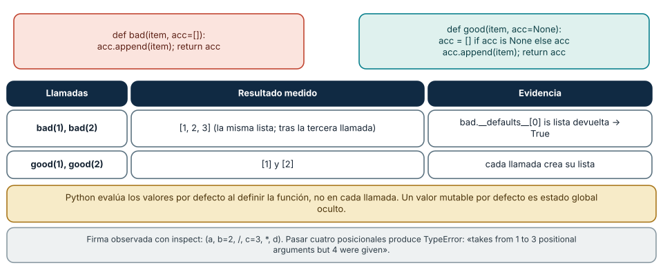
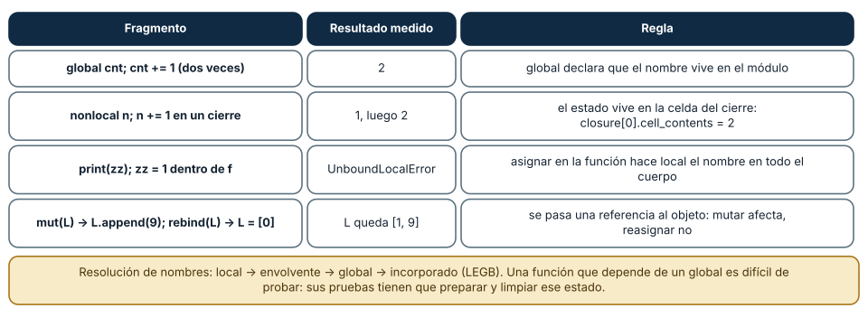
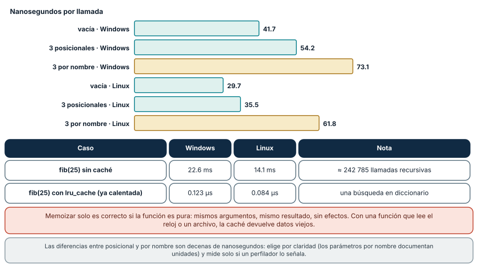

← SE-063 — Iteración, recursión y recorridos · ↑ Parte 05 · 📚 Índice completo · 🌐 Portal · SE-065 — Errores, excepciones y resultados explícitos →
Punto profesional y fundamento pedagógico
Punto profesional. La clase existe para usar funciones como contratos con parámetros, retorno, efectos y alcance localizables.
Por qué aparece aquí. Se sitúa después de Iteración, recursión y recorridos y antes de Errores, excepciones y resultados explícitos: convierte el conocimiento anterior en una decisión observable que la clase siguiente podrá reutilizar. La continuidad se comprueba en el artefacto, no por compartir vocabulario.
Error conceptual que debe corregir. Confundir paso de argumentos con copia universal o depender de variables globales ocultas.
Secuencia de aprendizaje. Antes de leer la solución, el estudiante predice el resultado del caso normal y del error conceptual anterior. Luego explica un caso resuelto paso a paso, construye un contraejemplo que cambie la decisión y, sin consultar el texto, reconstruye el mecanismo y lo aplica a una entrada nueva. La secuencia usa predicción, explicación propia, contraste y recuperación. ICAP distingue participación de construcción de conocimiento; How People Learn II exige conectar conocimiento previo, contexto y transferencia; la práctica de recuperación respalda producir de nuevo la explicación tras una demora; y Education for Life and Work exige devolución que explique la causa del error.
Evidencia de aprendizaje. Call-contract.md con frame, aliasing, efecto y caso inválido. Debe contener predicción previa, observación, explicación causal, contraejemplo, criterio de aceptación y una nota de qué dato haría cambiar la conclusión.
Límite de la conclusión. El modelo de llamadas depende del lenguaje y runtime declarados.
Trazabilidad fuente → afirmación
| Fuente primaria u oficial | Afirmación que respalda | Lo que no prueba |
|---|---|---|
| Python Tutorial | define la semántica y los límites de la API de Python utilizada en el experimento | No demuestra por sí sola que el artefacto del estudiante sea correcto. |
| Python Language Reference | define la semántica y los límites de la API de Python utilizada en el experimento | No demuestra por sí sola que el artefacto del estudiante sea correcto. |
Antes de empezar
Esta clase construye la CLI diagnóstica, implementación incremental de la especificación del modelo de decisión diagnóstica. Recupera SE-063 y convierte una regla ya modelada en comportamiento ejecutable o comprobable. Trabaja en cambios pequeños: predicción, código, ejecución, evidencia y explicación. Ejecutar sin poder explicar el resultado no completa la práctica.
Prerrequisitos
- Python 3.11 o posterior disponible como
pythonopython3; registra la versión real. - Terminal, editor de texto y Git; no se requieren paquetes externos.
- Comprender el contrato del modelo de decisión diagnóstica: entradas, resultados, errores e invariantes.
Problema auténtico
El prototipo de la CLI diagnóstica contiene un bloque que lee argumentos, clasifica, imprime y modifica una lista global. No puede probarse en aislamiento ni reutilizarse. Las funciones deben separar cálculo, coordinación y efectos mediante contratos pequeños.
Objetivos observables
Al terminar podrás explicar el mecanismo del lenguaje, predecir una ejecución, implementar un caso normal y sus fronteras, diagnosticar un fallo controlado, proteger el comportamiento con evidencia y separar lo transferible de lo específico de Python.
Mapa conceptual
Ver la notación fuente del diagrama
flowchart LR
S[Especificación el modelo de decisión diagnóstica] --> V[Valores y contratos]
V --> C[Control y transformación]
C --> E[Efectos en la frontera]
E --> O[Salida observable]
O --> T[Prueba y diagnóstico]
T -->|defecto o caso nuevo| SEl código no reemplaza la especificación: la materializa bajo reglas concretas del lenguaje y del entorno. La pregunta de esta clase es: ¿Qué promete una función y qué información debe permanecer fuera de su implementación?
Temas y por qué importan
| Lente | Pregunta | Evidencia |
|---|---|---|
| valor | ¿qué representa y qué tipo tiene? | ejemplo inspeccionable |
| control | ¿qué camino o repetición ocurre? | traza de estados |
| contrato | ¿qué acepta, retorna y rechaza? | casos frontera |
| efecto | ¿qué cambia fuera del cálculo? | archivo o stream controlado |
| mantenimiento | ¿cómo se detecta una regresión? | prueba y diff enfocado |
Conceptos y decisiones
1. Definición, llamada y retorno
def crea una función; la llamada enlaza argumentos a parámetros y ejecuta un nuevo marco. return termina y entrega un valor; sin return explícito devuelve None. Imprimir un resultado no equivale a retornarlo: impide composición y pruebas simples.
2. Parámetros y argumentos
Parámetros posicionales comunican datos esenciales; keyword-only hacen visibles opciones; defaults se evalúan al definir la función. Un default mutable como items=[] se comparte entre llamadas. Se usa None y se crea la colección dentro.
3. Alcance y resolución de nombres
Python resuelve nombres en ámbitos local, envolvente, global y builtins. Leer global oculta una dependencia; modificarlo exige global y aumenta acoplamiento. La CLI diagnóstica pasa configuración y reloj como argumentos para repetir pruebas.
4. Pureza práctica y efectos
Una función pura depende de argumentos y retorna sin cambiar exterior; es fácil de razonar. Leer archivo, tiempo o red es efecto. No todos los efectos son malos: se aíslan en adaptadores y el núcleo recibe valores. Así el cálculo se prueba sin red ni disco.
5. Contrato y cohesión
Nombre, tipos, docstring, precondiciones y resultados forman el contrato. Una función cohesiva responde una pregunta a un nivel. Demasiados booleanos suelen indicar políticas mezcladas; se prefiere un objeto de opciones o funciones distintas.
El argumento por defecto se evalúa una vez
Una función es un objeto que se crea cuando se ejecuta su def, y los valores por defecto de sus parámetros se evalúan en ese momento, una sola vez. Se definió def bad(item, acc=[]) y se llamó tres veces: bad(1), bad(2), bad(3); las tres devolvieron la misma lista, que terminó como [1, 2, 3], y bad.__defaults__[0] resultó ser ese mismo objeto. La lista por defecto es estado global oculto: cada llamada lo hereda de la anterior, y el resultado de una función depende de cuántas veces se ejecutó antes.
La alternativa idiomática usa None como centinela y crea el objeto dentro: acc = [] if acc is None else acc. Con ella, good(1) devolvió [1] y good(2) devolvió [2]. El defecto es difícil de ver porque la primera llamada funciona; falla en la segunda y en un orden que cambia con las pruebas, lo que produce el síntoma clásico de «pasa solo, falla en la suite».
Esta clase también fija los vocabularios de la firma. inspect.signature de def kw(a, b=2, /, c=3, *, d) mostró (a, b=2, /, c=3, *, d): a y b solo se pasan por posición, c admite ambas formas y d solo por nombre. Pasar cuatro posicionales produjo TypeError: kw() takes from 1 to 3 positional arguments but 4 were given. Los parámetros solo por nombre son una herramienta de diseño: una llamada como evaluate(spec, budget=5) documenta la unidad en el sitio de uso y no se rompe si se reordenan los parámetros.

Cómo leer la figura. A la izquierda, la versión que comparte la lista (en rojo); a la derecha, la que crea una nueva en cada llamada (en verde). La tabla da lo que devolvieron las llamadas. Dónde deja de valer: el comportamiento es de Python (los valores por defecto se evalúan al definir). En otros lenguajes (por ejemplo, JavaScript) se evalúan en cada llamada. Un valor por defecto inmutable (número, cadena, None, tupla) es seguro.
Alcance, cierres y el paso de argumentos
Para resolver un nombre Python busca en este orden: local, función envolvente, global y predefinidos (LEGB). Si una función asigna a un nombre, ese nombre es local en todo el cuerpo, incluso antes de la asignación: print(zz); zz = 1 lanzó UnboundLocalError: cannot access local variable 'zz' where it is not associated with a value. Con global cnt; cnt += 1 dos veces el contador valió 2, a costa de que la función dependa de un estado que vive fuera de ella y que cualquier prueba debe preparar y limpiar.
Los cierres convierten el estado en una celda: con nonlocal n; n += 1 dentro de una función interna, dos llamadas devolvieron 1 y 2, y c1.__closure__[0].cell_contents valía 2. Es útil para contadores y fábricas de funciones, pero esconde estado igual que un global, con alcance más limitado.
El paso de argumentos suele describirse mal. Python pasa referencias a objetos por valor: la función recibe un nombre nuevo enlazado al mismo objeto. Por eso mut(L) con L.append(9) modificó la lista del llamador y rebind(L) con L = [0] no la tocó: L quedó [1, 9]. Mutar un argumento es un efecto visible para quien llama; reasignarlo no. La consecuencia de diseño es que una función que modifica su argumento debe decirlo en su contrato (nombre, docstring), y el núcleo del laboratorio evita el problema devolviendo valores nuevos (apply_observation devuelve un State sin tocar el anterior).

Cómo leer la figura. Cada fila es un fragmento mínimo y su resultado medido; la columna derecha enuncia la regla del lenguaje que lo explica. Dónde deja de valer: la descripción «referencia por valor» es la de Python (y Java con objetos). C++ permite pasar por referencia real o por valor con copia; Rust mueve o presta. La regla del contrato (declarar si se muta) sí se transfiere.
Costo de llamar, pureza y memoización
Llamar a una función no es gratis, pero cuesta poco: una función vacía costó 41.7 ns en Windows (29.7 en Linux), con tres argumentos posicionales 54.2 ns (35.5) y con tres por nombre 73.1 ns (61.8). Pasar por nombre añade unas decenas de nanosegundos, y a cambio documenta cada argumento. En un programa cuyo tiempo se va en I/O, esa diferencia es invisible; la razón para elegir llamadas por nombre es la legibilidad y la seguridad ante reordenamientos.
La pureza (mismos argumentos, mismo resultado, sin efectos observables) es lo que permite razonar y también optimizar. fib_slow(25) tardó 22.6 ms (14.1 ms en Linux) porque recalcula subproblemas (242 785 llamadas); con functools.lru_cache la misma consulta ya calentada tardó 0.123 µs (0.084 µs en Linux), una búsqueda en diccionario. Pero la caché es correcta solo si la función es pura: si lee un reloj, un archivo o una variable global, la caché devuelve resultados viejos y el defecto se manifiesta lejos de la causa.
La pureza práctica es más pobre que la teórica: imprimir, registrar y medir son efectos, pero se pueden confinar. El laboratorio separa engine.py (cálculo, sin archivos ni impresión) de cli.py (efectos), y esa frontera es la que permite probar el motor sin crear archivos. Contrato y cohesión van juntos: una función que hace una cosa, con nombre que dice cuál, con parámetros que declaran qué necesita y un resultado que declara qué devuelve.

Cómo leer la figura. Las barras doradas son llamadas con argumentos por nombre; las verdes, posicionales o vacías. La tabla inferior compara el cálculo recursivo con el memoizado. Dónde deja de valer: los nanosegundos son de una máquina y de CPython 3.12; las diferencias entre estilos de llamada se medirían distintas en PyPy o con otra versión. La memoización solo es válida para funciones puras y con argumentos hashables.
Definiciones de trabajo
- parámetro: nombre local declarado por una función.
- argumento: valor suministrado en una llamada.
- retorno: valor entregado al llamador.
- alcance: región donde un nombre se resuelve.
- efecto: interacción observable fuera del valor retornado.
Estas definiciones describen el uso concreto en la CLI diagnóstica. Cuando Python permita varias conductas, el contrato del programa elige una y la hace visible con validación y pruebas.
Ejemplo mínimo
def classify(duration_ms: float, *, budget_ms: float) -> str:
# Clasifica una duración ya validada.
if duration_ms < 0 or budget_ms <= 0:
raise ValueError("durations must be valid")
return "slow" if duration_ms > budget_ms else "healthyTransforma un bloque que lee input, clasifica e imprime en parse, classify y present. Ejecuta classify con 0, límite y límite+1 sin interacción.
Ejecuta el fragmento en un archivo, no solo en una conversación interactiva. Conserva comando, versión, salida y explicación de cada línea relevante.
Ejemplo profesional
El núcleo de la CLI diagnóstica recibe observaciones y política y retorna un resultado estructurado. La CLI traduce argumentos y códigos de salida. Un reloj inyectado permite probar deadlines sin esperar tiempo real.
El criterio profesional es que el comportamiento pueda ser consumido, diagnosticado y cambiado sin depender de conocimiento oral ni de estado oculto.
Práctica guiada
- marca cálculo y efectos en un bloque.
- extrae una función con retorno.
- haz opcional un parámetro solo si tiene default seguro.
- elimina lectura global.
- escribe contrato y tres llamadas frontera.
- ejecuta
python -m unittest -vcuando existan pruebas y registra el resultado exacto.
Ejercicios
- Lectura: predice qué imprime
kw(1, 5, d=7)ykw(1, 2, 3, 4)para la firma(a, b=2, /, c=3, *, d); verifica coninspect.signature. - Defecto: reproduce el argumento mutable por defecto, escribe la prueba que lo detecta de forma independiente del orden y corrige.
- Pureza: clasifica cinco funciones del laboratorio como puras o con efectos y justifica la clasificación con la línea que decide.
- Medición: mide con
timeituna llamada posicional y una por nombre en tu equipo y declara cuándo la diferencia importaría.
Reto verificable
Entrega un cambio que incluya comportamiento, caso normal, caso límite, fallo controlado y explicación. Otra persona debe poder ejecutar los comandos desde un checkout limpio y relacionar cada salida con una regla del modelo de decisión diagnóstica.
Demostración guiada
- Escribe la entrada y la salida esperada antes del código.
- Ejecuta el caso mínimo y observa valores intermedios sin dejar prints permanentes en el núcleo.
- Añade el caso frontera que obligue a decidir, no solo a teclear.
- Introduce el fallo descrito abajo y confirma que la evidencia lo detecta.
- Corrige, ejecuta toda la suite y revisa el diff por efectos no deseados.
Preguntas frecuentes
¿Python pasa por valor o por referencia?
Pasa una referencia a un objeto, por valor. Mutar el objeto es visible para quien llama; reasignar el parámetro no. Medido: la lista quedó [1, 9] tras mutar y reasignar.
¿Cuándo usar global?
Casi nunca en lógica de dominio: oculta una dependencia. Úsalo para configuración de módulo declarada y probada, y prefiere pasar el valor como parámetro.
¿Cuántos parámetros son demasiados?
No hay un número exacto; cuando varios viajan siempre juntos, forman un concepto con nombre (un dataclass). El laboratorio pasa spec, state y observation, no una lista de campos sueltos.
¿Una función pura puede imprimir?
Estrictamente no: imprimir es un efecto. En la práctica se confina: la función calcula y devuelve, y quien llama imprime.
Fallo controlado y diagnóstico
Escribe def agregar(observacion, historial=[]) que añade la observación al historial y lo devuelve. Llama dos veces con observaciones distintas y comprueba que el segundo resultado contiene la primera observación. Ejecuta tus pruebas en orden inverso y observa que el resultado cambia. Corrige con el centinela None, añade una prueba que llame dos veces sin pasar el historial y verifique que las listas son independientes, e inspecciona agregar.__defaults__ antes y después para registrar la causa. Anota el síntoma («solo falla cuando se ejecuta junto a otra prueba») porque es el que lleva al diagnóstico en la práctica.
Errores comunes y cómo corregirlos
| Síntoma | Causa | Corrección |
|---|---|---|
| el resultado de una función depende de llamadas anteriores | valor por defecto mutable compartido | None como centinela y crear el objeto dentro |
UnboundLocalError al leer un nombre que «existe» | una asignación posterior lo hace local en toda la función | renombrar, pasar como parámetro o declarar nonlocal/global con razón |
| la prueba pasa sola y falla en la suite | estado global o por defecto compartido entre pruebas | eliminar el estado compartido o reiniciarlo en setUp |
lru_cache devuelve datos viejos | función no pura memoizada | cachear solo funciones puras o añadir invalidación explícita |
TypeError por argumentos posicionales de más | firma con parámetros solo por nombre o con barra | pasar por nombre y leer inspect.signature |
Entorno y archivos clave
work/SE-064/
├── diagnostic_cli/
│ ├── __init__.py
│ ├── domain.py
│ ├── cli.py
│ └── __main__.py
├── tests/
│ └── test_diagnostic_cli.py
└── README.mdNo instales dependencias para resolver lo que cubre la biblioteca estándar. README.md conserva versión, comandos, entradas, salida, limpieza y límites. Los fragmentos son pedagógicos; intégralos solo después de entender su contrato.
Laboratorio integrado de la Parte 05
En labs/part-05-diagnostic-cli, dibuja el contrato de parse_spec, apply_observation, run_diagnosis y main: parámetros, retorno, errores y efectos. Prueba el núcleo con StringIO y valores construidos, sin terminal ni archivos. Luego introduce deliberadamente una lectura de archivo en engine.py, explica qué prueba se vuelve más frágil y revierte el cambio. Se aprueba por localizar dependencias y efectos, no por reducir el número de funciones.
Seguridad, ética y accesibilidad
- usa fixtures sintéticos y no incluyas tokens, rutas personales ni incidentes reales;
- limita tamaño, profundidad y tiempo de entradas no confiables;
- separa stdout parseable de stderr y redacta datos sensibles;
- ofrece mensajes accionables y no dependas solo de color;
- preserva autorización como regla del núcleo, no como checkbox de UI;
- no uses
eval,execni construcción de shell con entrada externa.
Puente hacia el trabajo con agentes
Una herramienta que se ofrece a un agente es una función con una firma, y el agente la llamará con los argumentos que haya generado. Lo aprendido se aplica sin cambios: una herramienta con parámetros solo por nombre y tipos claros reduce llamadas erróneas; un valor por defecto mutable en el servidor convierte dos peticiones independientes de agentes distintos en una sola con estado compartido; y una herramienta pura (mismas entradas, mismo resultado) puede reintentarse sin riesgo, mientras que una con efectos exige idempotencia o confirmación. Dos controles: la descripción de cada herramienta declara sus efectos y si es segura de repetir, y el núcleo de las herramientas no usa estado global. Las partes de herramientas y MCP retoman este contrato.
Transferencia
Reimplementa el contrato, no la sintaxis. Identifica cómo el segundo lenguaje representa ausencia, error, mutabilidad y módulos. Conserva fixtures y resultados públicos para detectar una diferencia semántica.
Evaluación y evidencia
| Criterio | Evidencia para aprobar |
|---|---|
| comprensión | predicción y explicación de ejecución |
| comportamiento | normal, límite e inválido según contrato |
| diseño | cálculo separado de efectos y dependencias visibles |
| diagnóstico | fallo mínimo, causa y regresión |
| reproducibilidad | versión, comandos y salidas desde checkout limpio |
Fuentes
- Python Tutorial — define la semántica y los límites de la API de Python utilizada en el experimento.
- Python Language Reference — define la semántica y los límites de la API de Python utilizada en el experimento.
- Python Tutorial — Defining Functions: valores por defecto, argumentos por nombre y parámetros solo posicionales.
- Execution model — Naming and binding: alcance, cierres y resolución de nombres.
- Compound statements — Function definitions: cuándo se evalúan los valores por defecto y cómo se crea la función.
- functools — lru_cache: memoización y requisitos de hashabilidad.
- inspect — Introspection of signatures:
inspect.signaturey tipos de parámetro.
La documentación oficial define el lenguaje y la biblioteca; no demuestra que la CLI diagnóstica cumpla su dominio. Esa evidencia vive en contratos, pruebas y ejecución reproducible.
Límites y siguiente paso
Funciones no sustituyen un diseño de módulos ni validación de fronteras. La próxima clase convierte fallos esperados e inesperados en contratos de error.
Lo que no se midió. No se compararon functools.cache con otras estrategias de caché ni se midió el efecto del perfilador; las llamadas por nombre y posicionales se midieron con un microbenchmark que no representa un programa completo.
Glosario
- parámetro: nombre local declarado por una función.
- argumento: valor suministrado en una llamada.
- retorno: valor entregado al llamador.
- alcance: región donde un nombre se resuelve.
- efecto: interacción observable fuera del valor retornado.
← SE-063 — Iteración, recursión y recorridos · ↑ Parte 05 · 📚 Índice completo · 🌐 Portal · SE-065 — Errores, excepciones y resultados explícitos →